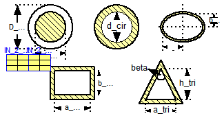

Calculation of pressure loss for an internal flow through different geometries at laminar and turbulent flow regime considering surface roughness. See more information.
Extends from Modelica.Icons.VariantsPackage (Icon for package containing variants).
| Name | Description |
|---|---|
| Pressure loss of internal flow | calculate pressure loss | overall flow regime | surface roughness | several geometries | |
| Pressure loss of internal flow | calculate mass flow rate | overall flow regime | surface roughness | several geometries | |
| Input record for function dp_internalFlowOverall_DP and dp_internalFlowOverall_MFLOW | |
| Input record for function dp_internalFlowOverall_DP and dp_internalFlowOverall_MFLOW |

Calculation of pressure loss for an internal flow through different geometries at overall flow regime for incompressible and single-phase fluid flow considering surface roughness.
Generally this function is numerically best used for the incompressible case , where the mass flow rate (m_flow) is known (as state variable) in the used model and the corresponding pressure loss (DP) has to be calculated. On the other hand the function dp_internalFlowOverall_MFLOW is numerically best used for the compressible case if the pressure loss (dp) is known (out of pressures as state variable) and the mass flow rate (M_FLOW) has to be calculated. See more information.
Extends from Modelica.Fluid.Dissipation.Utilities.Icons.PressureLoss.Channel_d (Geometry figure for channel).
| Type | Name | Default | Description |
|---|---|---|---|
| Constant inputs | |||
| dp_internalFlowOverall_IN_con | IN_con | Input record for function dp_internalFlowOverall_DP | |
| Variable inputs | |||
| dp_internalFlowOverall_IN_var | IN_var | Input record for function dp_internalFlowOverall_DP | |
| Input | |||
| MassFlowRate | m_flow | Mass flow rate [kg/s] | |
| Type | Name | Description |
|---|---|---|
| Pressure | DP | Output for function dp_internalFlowOverall_DP [Pa] |
function dp_internalFlowOverall_DP
"Pressure loss of internal flow | calculate pressure loss | overall flow regime | surface roughness | several geometries"
//SOURCE_1: Idelchik, I.E.: HANDBOOK OF HYDRAULIC RESISTANCE, 3rd edition, 2006.
//SOURCE_2: Miller, D.S.: INTERNAL FLOW SYSTEMS, 1978.
//SOURCE_3: VDI-Waermeatlas, 9th edition, Springer-Verlag, 2002
//Notation of equations according to SOURCES
import FD = Modelica.Fluid.Dissipation.PressureLoss.Channel;
import SMOOTH = Modelica.Fluid.Dissipation.Utilities.Functions.General.Stepsmoother;
//icon
extends Modelica.Fluid.Dissipation.Utilities.Icons.PressureLoss.Channel_d;
//input records
input Modelica.Fluid.Dissipation.PressureLoss.Channel.dp_internalFlowOverall_IN_con
IN_con "Input record for function dp_internalFlowOverall_DP";
input Modelica.Fluid.Dissipation.PressureLoss.Channel.dp_internalFlowOverall_IN_var
IN_var "Input record for function dp_internalFlowOverall_DP";
input SI.MassFlowRate m_flow "Mass flow rate";
//output variables
output SI.Pressure DP "Output for function dp_internalFlowOverall_DP";
protected
type TYP =
Modelica.Fluid.Dissipation.Utilities.Types.GeometryOfInternalFlow;
Real MIN=Modelica.Constants.eps;
SI.Area A_cross=max(MIN, if IN_con.geometry == TYP.Annular then (PI/4)*((
IN_con.D_ann)^2 - (IN_con.d_ann)^2) else if IN_con.geometry == TYP.Circular then
PI/4*(IN_con.d_cir)^2 else if IN_con.geometry == TYP.Elliptical then
PI*IN_con.a_ell*IN_con.b_ell else if IN_con.geometry == TYP.Rectangular then
IN_con.a_rec*IN_con.b_rec else if IN_con.geometry == TYP.Isosceles then
0.5*(IN_con.a_tri*IN_con.h_tri) else 0) "Cross sectional area";
SI.Length perimeter=max(MIN, if IN_con.geometry == TYP.Annular then PI*(
IN_con.D_ann + IN_con.d_ann) else if IN_con.geometry == TYP.Circular then
PI*IN_con.d_cir else if IN_con.geometry == TYP.Elliptical then PI*(
IN_con.a_ell + IN_con.b_ell) else if IN_con.geometry == TYP.Rectangular then
2*(IN_con.a_rec + IN_con.b_rec) else if IN_con.geometry == TYP.Isosceles then
IN_con.a_tri + 2*((IN_con.h_tri)^2 + (IN_con.a_tri/2)^2)^0.5 else 0)
"Perimeter";
SI.Diameter d_hyd=4*A_cross/perimeter "Hydraulic diameter";
Real beta=IN_con.beta*180/PI "Top angle";
//SOURCE_2: p.138, sec 8.5
Real Dd_ann=min(max(MIN, IN_con.d_ann), IN_con.D_ann)/max(MIN, max(IN_con.d_ann,
IN_con.D_ann)) "Ratio of small to large diameter of annular geometry";
Real CF_ann=98.7378*Dd_ann^0.0589 "Correction factor for annular geometry";
Real ab_rec=min(IN_con.a_rec, IN_con.b_rec)/max(MIN, max(IN_con.a_rec, IN_con.b_rec))
"Aspect ratio of rectangular geometry";
Real CF_rec=-59.85*(ab_rec)^3 + 148.67*(ab_rec)^2 - 128.1*(ab_rec) + 96.1
"Correction factor for rectangular geometry";
Real ab_ell=min(IN_con.a_ell, IN_con.b_ell)/max(MIN, max(IN_con.a_ell, IN_con.b_ell))
"Ratio of small to large length of annular geometry";
Real CF_ell=-169.2211*(ab_ell)^4 + 260.9028*(ab_ell)^3 - 113.7890*(ab_ell)^2
+ 9.2588*(ab_ell)^1 + 78.7124
"Correction factor for elliptical geometry";
Real CF_tri=-0.0013*(min(90, beta))^2 + 0.1577*(min(90, beta)) + 48.5575
"Correction factor for triangular geometry";
Real CF_lam=if IN_con.geometry == TYP.Annular then CF_ann else if IN_con.geometry
== TYP.Circular then 64 else if IN_con.geometry == TYP.Elliptical then
CF_ell else if IN_con.geometry == TYP.Rectangular then CF_rec else if
IN_con.geometry == TYP.Isosceles then CF_tri else 0
"Correction factor for laminar flow";
//SOURCE_1: p.81, fig. 2-3, sec 21-22: definition of flow regime boundaries
Real k=max(MIN, abs(IN_con.K)/d_hyd) "Relative roughness";
SI.ReynoldsNumber Re_lam_min=1e3 "Minimum Reynolds number for laminar regime";
SI.ReynoldsNumber Re_lam_max=2090*(1/max(0.007, k))^0.0635
"Maximum Reynolds number for laminar regime";
SI.ReynoldsNumber Re_lam_leave=min(Re_lam_max, max(Re_lam_min, 754*
Modelica.Math.exp(if k <= 0.007 then 0.0065/0.007 else 0.0065/k)))
"Start of transition regime for increasing Reynolds number (leaving laminar regime)";
//Adapted mass flow rate for function dp_turbulent of a straight pipe
SI.MassFlowRate m_flow_turb=m_flow*(PI/4*d_hyd^2)/A_cross
"Mass flow rate for turbulent calculation";
SI.Velocity velocity=m_flow/(IN_var.rho*A_cross) "Velocity of internal flow";
SI.ReynoldsNumber Re=IN_var.rho*abs(velocity)*d_hyd/IN_var.eta;
protected
Modelica.Fluid.Dissipation.PressureLoss.StraightPipe.dp_overall_IN_con
IN_2_con(
final roughness=IN_con.roughness,
final d_hyd=d_hyd,
final K=IN_con.K,
final L=IN_con.L) "Input record for turbulent regime";
Modelica.Fluid.Dissipation.PressureLoss.StraightPipe.dp_overall_IN_var
IN_2_var( final eta=
IN_var.eta, final rho=IN_var.rho) "Input record for turbulent regime";
//Documentation
algorithm
DP := SMOOTH(
Re_lam_min,
Re_lam_max,
Re)*(CF_lam/2)*IN_con.L/d_hyd^2*velocity*IN_var.eta + SMOOTH(
Re_lam_max,
Re_lam_min,
Re)*Dissipation.PressureLoss.StraightPipe.dp_turbulent_DP(
IN_2_con,
IN_2_var,
m_flow_turb);
end dp_internalFlowOverall_DP;
Calculation of pressure loss for an internal flow through different geometries at overall flow regime for incompressible and single-phase fluid flow considering surface roughness.
Generally this function is numerically best used for the compressible case if the pressure loss (dp) is known (out of pressures as state variable) and the mass flow rate (M_FLOW) has to be calculated. On the other hand the function dp_internalFlowOverall_DP is numerically best used for the incompressible case , where the mass flow rate (m_flow) is known (as state variable) in the used model and the corresponding pressure loss (DP) has to be calculated.
The pressure loss calculation for internal fluid flow in different geometries is further documented here.
Extends from Modelica.Fluid.Dissipation.Utilities.Icons.PressureLoss.Channel_d (Geometry figure for channel).
| Type | Name | Default | Description |
|---|---|---|---|
| Constant inputs | |||
| dp_internalFlowOverall_IN_con | IN_con | Input record for function dp_internalFlowOverall_MFLOW | |
| Variable inputs | |||
| dp_internalFlowOverall_IN_var | IN_var | Input record for function dp_internalFlowOverall_MFLOW | |
| Input | |||
| Pressure | dp | Pressure loss [Pa] | |
| Type | Name | Description |
|---|---|---|
| MassFlowRate | M_FLOW | Output of function dp_overall_MFLOW [kg/s] |
function dp_internalFlowOverall_MFLOW
"Pressure loss of internal flow | calculate mass flow rate | overall flow regime | surface roughness | several geometries"
import FD = Modelica.Fluid.Dissipation.PressureLoss.Channel;
import SMOOTH = Modelica.Fluid.Dissipation.Utilities.Functions.General.Stepsmoother;
//icon
extends Modelica.Fluid.Dissipation.Utilities.Icons.PressureLoss.Channel_d;
//input records
input Modelica.Fluid.Dissipation.PressureLoss.Channel.dp_internalFlowOverall_IN_con
IN_con "Input record for function dp_internalFlowOverall_MFLOW";
input Modelica.Fluid.Dissipation.PressureLoss.Channel.dp_internalFlowOverall_IN_var
IN_var "Input record for function dp_internalFlowOverall_MFLOW";
input SI.Pressure dp "Pressure loss";
//output variables
output SI.MassFlowRate M_FLOW "Output of function dp_overall_MFLOW";
protected
type TYP1 =
Modelica.Fluid.Dissipation.Utilities.Types.GeometryOfInternalFlow;
type TYP2 = Modelica.Fluid.Dissipation.Utilities.Types.Roughness;
Real MIN=Modelica.Constants.eps;
SI.Area A_cross=max(MIN, if IN_con.geometry == TYP1.Annular then (PI/4)*((
IN_con.D_ann)^2 - (IN_con.d_ann)^2) else if IN_con.geometry == TYP1.Circular then
PI/4*(IN_con.d_cir)^2 else if IN_con.geometry == TYP1.Elliptical then
PI*IN_con.a_ell*IN_con.b_ell else if IN_con.geometry == TYP1.Rectangular then
IN_con.a_rec*IN_con.b_rec else if IN_con.geometry == TYP1.Isosceles then
0.5*(IN_con.a_tri*IN_con.h_tri) else 0) "Cross sectional area";
SI.Length perimeter=max(MIN, if IN_con.geometry == TYP1.Annular then PI*(
IN_con.D_ann + IN_con.d_ann) else if IN_con.geometry == TYP1.Circular then
PI*IN_con.d_cir else if IN_con.geometry == TYP1.Elliptical then PI*
(IN_con.a_ell + IN_con.b_ell) else if IN_con.geometry == TYP1.Rectangular then
2*(IN_con.a_rec + IN_con.b_rec) else if IN_con.geometry == TYP1.Isosceles then
IN_con.a_tri + 2*((IN_con.h_tri)^2 + (IN_con.a_tri/2)^2)^0.5 else 0)
"Perimeter";
SI.Diameter d_hyd=4*A_cross/perimeter "Hydraulic diameter";
Real beta=IN_con.beta*180/PI "Top angle";
//SOURCE_2: p.138, sec 8.5
Real Dd_ann=min(max(MIN, IN_con.d_ann), IN_con.D_ann)/max(MIN, max(IN_con.d_ann,
IN_con.D_ann)) "Ratio of small to large diameter of annular geometry";
Real CF_ann=98.7378*Dd_ann^0.0589 "Correction factor for annular geometry";
Real ab_rec=min(IN_con.a_rec, IN_con.b_rec)/max(MIN, max(IN_con.a_rec, IN_con.b_rec))
"Aspect ratio of rectangular geometry";
Real CF_rec=-59.85*(ab_rec)^3 + 148.67*(ab_rec)^2 - 128.1*(ab_rec) + 96.1
"Correction factor for rectangular geometry";
Real ab_ell=min(IN_con.a_ell, IN_con.b_ell)/max(MIN, max(IN_con.a_ell, IN_con.b_ell))
"Ratio of small to large length of annular geometry";
Real CF_ell=-169.2211*(ab_ell)^4 + 260.9028*(ab_ell)^3 - 113.7890*(ab_ell)^2
+ 9.2588*(ab_ell)^1 + 78.7124
"Correction factor for elliptical geometry";
Real CF_tri=-0.0013*(min(90, beta))^2 + 0.1577*(min(90, beta)) + 48.5575
"Correction factor for triangular geometry";
Real CF_lam=if IN_con.geometry == TYP1.Annular then CF_ann else if IN_con.geometry
== TYP1.Circular then 64 else if IN_con.geometry == TYP1.Elliptical then
CF_ell else if IN_con.geometry == TYP1.Rectangular then CF_rec else
if IN_con.geometry == TYP1.Isosceles then CF_tri else 0
"Correction factor for laminar flow";
//SOURCE_1: p.81, fig. 2-3, sec 21-22: definition of flow regime boundaries
Real k=max(MIN, abs(IN_con.K)/d_hyd) "Relative roughness";
SI.ReynoldsNumber Re_lam_min=1e3 "Minimum Reynolds number for laminar regime";
SI.ReynoldsNumber Re_lam_max=2090*(1/max(0.007, k))^0.0635
"Maximum Reynolds number for laminar regime";
SI.ReynoldsNumber Re_turb_min=4e3
"Minimum Reynolds number for turbulent regime";
SI.ReynoldsNumber Re_lam_leave=min(Re_lam_max, max(Re_lam_min, 754*
Modelica.Math.exp(if k <= 0.007 then 0.0065/0.007 else 0.0065/k)))
"Start of transition regime for increasing Reynolds number (leaving laminar regime)";
//determining darcy friction factor out of pressure loss calulation for straight pipe:
//dp = lambda_FRI*L/d_hyd*(rho/2)*velocity^2 and assuming lambda_FRI == lambda_FRI_calc/Re^2
TYP.DarcyFrictionFactor lambda_FRI_calc=2*abs(dp)*d_hyd^3*IN_var.rho/(IN_con.L
*IN_var.eta^2) "Adapted Darcy friction factor";
//SOURCE_3: p.Lab 1, eq. 5: determine Re assuming laminar regime
SI.ReynoldsNumber Re_lam=lambda_FRI_calc/CF_lam
"Reynolds number assuming laminar regime";
//SOURCE_3: p.Lab 2, eq. 10: determine Re assuming turbulent regime (Colebrook-White)
SI.ReynoldsNumber Re_turb=if IN_con.roughness == TYP2.Neglected then (max(MIN,
lambda_FRI_calc)/0.3164)^(1/1.75) else -2*sqrt(max(lambda_FRI_calc, MIN))
*Modelica.Math.log10(2.51/sqrt(max(lambda_FRI_calc, MIN)) + k/3.7)
"Reynolds number assuming turbulent regime";
//determine actual flow regime
SI.ReynoldsNumber Re_check=if Re_lam < Re_lam_leave then Re_lam else Re_turb;
//determine Re for transition regime
SI.ReynoldsNumber Re_trans=if Re_lam >= Re_lam_leave then
Modelica.Fluid.Dissipation.Utilities.Functions.General.CubicInterpolation_DP(
Re_check,
Re_lam_leave,
Re_turb_min,
k,
lambda_FRI_calc) else 0;
//determine actual Re
SI.ReynoldsNumber Re=if Re_lam < Re_lam_leave then Re_lam else if Re_turb >
Re_turb_min then Re_turb else Re_trans;
Modelica.Fluid.Dissipation.PressureLoss.StraightPipe.dp_overall_IN_con
IN_2_con(
final roughness=IN_con.roughness,
final d_hyd=d_hyd,
final K=IN_con.K,
final L=IN_con.L) "Input record for turbulent regime";
Modelica.Fluid.Dissipation.PressureLoss.StraightPipe.dp_overall_IN_var
IN_2_var( final eta=
IN_var.eta, final rho=IN_var.rho) "Input record for turbulent regime";
//Documentation
algorithm
M_FLOW := SMOOTH(
Re_lam_min,
Re_turb,
Re)*IN_var.rho*A_cross*(dp*(2/CF_lam)*(d_hyd^2/IN_con.L)*(1/
IN_var.eta)) + SMOOTH(
Re_turb,
Re_lam_min,
Re)*(A_cross/((PI/4)*d_hyd^2))*
Modelica.Fluid.Dissipation.PressureLoss.StraightPipe.dp_turbulent_MFLOW(
IN_2_con,
IN_2_var,
dp);
end dp_internalFlowOverall_MFLOW;
 Modelica.Fluid.Dissipation.PressureLoss.Channel.dp_internalFlowOverall_IN_con
Modelica.Fluid.Dissipation.PressureLoss.Channel.dp_internalFlowOverall_IN_con
Extends from Modelica.Fluid.Dissipation.Utilities.Records.PressureLoss.Geometry (Input for several geometries of internal flow).
| Type | Name | Default | Description |
|---|---|---|---|
| Channel | |||
| Roughness | roughness | Dissipation.Utilities.Types.... | Choice of considering surface roughness |
| GeometryOfInternalFlow | geometry | Modelica.Fluid.Dissipation.U... | Choice of geometry for internal flow |
| Length | K | 0 | Roughness (average height of surface asperities) [m] |
| Length | L | 1 | Length [m] |
| Annular cross sectional area | |||
| Diameter | d_ann | d_cir | Small diameter [m] |
| Diameter | D_ann | 2*d_ann | Large diameter [m] |
| Circular cross sectional area | |||
| Diameter | d_cir | 0.1 | Internal diameter [m] |
| Elliptical cross sectional area | |||
| Length | a_ell | (3/4)*d_cir | Half length of long base line [m] |
| Length | b_ell | 0.5*a_ell | Half length of short base line [m] |
| Rectangular cross sectional area | |||
| Length | a_rec | d_cir | Horizontal length [m] |
| Length | b_rec | a_rec | Vertical length [m] |
| Length | a_tri | d_cir*(1 + 2^0.5) | Length of base line [m] |
| Triangle cross sectional area | |||
| Length | h_tri | 0.5*a_tri | Heigth to top angle perpendicular to base line [m] |
| Angle | beta | 90*PI/180 | Top angle [rad] |
record dp_internalFlowOverall_IN_con
"Input record for function dp_internalFlowOverall_DP and dp_internalFlowOverall_MFLOW"
//channel variables
Modelica.Fluid.Dissipation.Utilities.Types.Roughness roughness=Dissipation.Utilities.Types.Roughness.Considered
"Choice of considering surface roughness";
extends Modelica.Fluid.Dissipation.Utilities.Records.PressureLoss.Geometry;
end dp_internalFlowOverall_IN_con;
Modelica.Fluid.Dissipation.PressureLoss.Channel.dp_internalFlowOverall_IN_var
Extends from Modelica.Fluid.Dissipation.Utilities.Records.General.PressureLoss (Base record for fluid properties for pressure loss).
| Type | Name | Default | Description |
|---|---|---|---|
| Fluid properties | |||
| DynamicViscosity | eta | Dynamic viscosity of fluid [Pa.s] | |
| Density | rho | Density of fluid [kg/m3] | |
record dp_internalFlowOverall_IN_var "Input record for function dp_internalFlowOverall_DP and dp_internalFlowOverall_MFLOW" //fluid property variables extends Modelica.Fluid.Dissipation.Utilities.Records.General.PressureLoss;end dp_internalFlowOverall_IN_var;